THINKINGENWEALTH · GENTHINKERS
Verified live Aug 10: July payrolls −23,000 (consensus +83K — a 106K miss) · unemployment 4.1% because people stopped looking · wages +3.2% YoY, slowest since May 2021 — against CPI at 3.5%. Same week the S&P closed at a record 7,757.64 as September hike odds fell to ~44% and yields dropped. The week's owned number: a −0.29% real raise = −$150/yr on a $50K salary. Wednesday's CPI (8:30am ET) is the built-in verdict beat. No FOMC until Sep 15–16 — the data IS the story.
| Time | Beat | The line | Cut lands | Loop |
|---|---|---|---|---|
| 0:00 | Cold open | "You got a raise this year — and you still got poorer. 2 numbers." | Intro clip (hook box) | OPENS |
| 0:02 | Stakes | "…one of them is printed on your own paystub." | hold intro | open |
| 0:08 | Pt 1 | the wage number: +3.2%, slowest since May 2021 | P1 tile | loop 1 |
| 0:25 | Pt 2 + re-hook | the price number: +3.5% → "Wednesday this gets re-measured live" | P2 tile | loop 2 |
| 0:42 | Payoff | the −$150 math ON the tile | P3 tile | CLOSES |
| 0:55 | Loop-close | back to the paystub → Discord bridge → sign-off | intro re-cut | CLOSED |
| Platform | Asset | Angle / age cut | Window | CTA |
|---|---|---|---|---|
| TikTok | Full react (60–70s), intro clip + Pt tiles | 18–24: "your first real raise still lost" | 12–7pm band | Comment RAISE (first caption line) |
| Same cut, IG-native reel | 18–24 first-paycheck cut | ~3pm ET | Comment RAISE | |
| YouTube | Short (≤45s tightened) — "family raise" first line | 35–54: family/career stakes | AM–early PM | Artifact = subscribe reason · soft CTA |
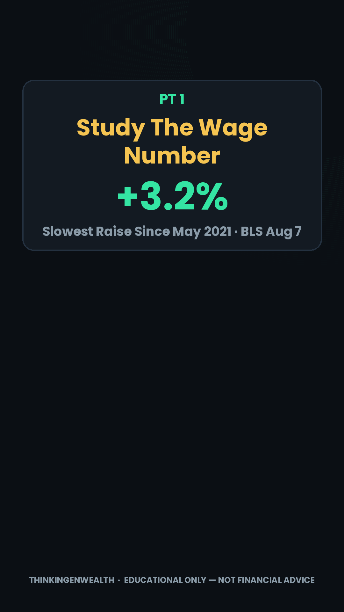
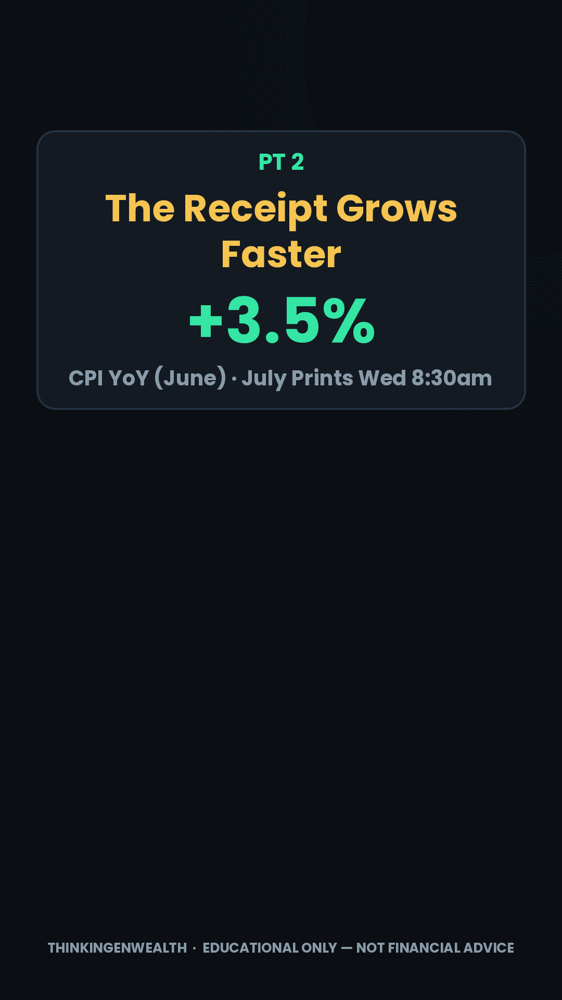
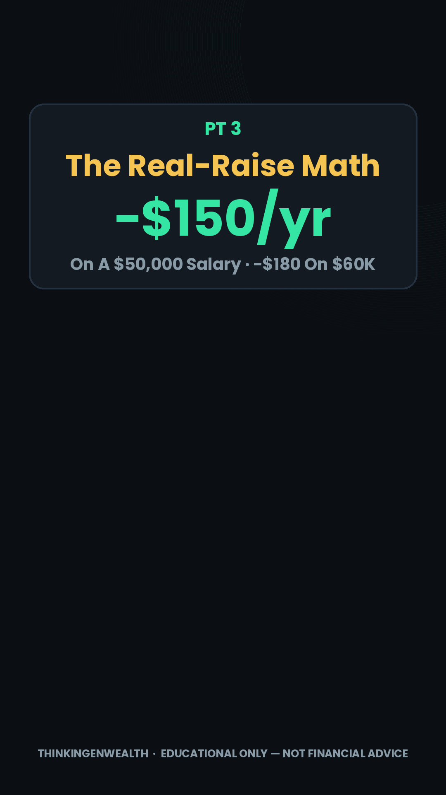
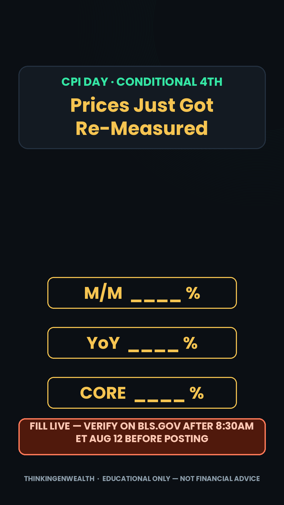
| Time | Beat | The line | Cut lands | Loop |
|---|---|---|---|---|
| 0:00 | Cold open | "These 2 lines decide your car loan, your rent, and your savings." | Intro clip | OPENS |
| 0:02 | Stakes | "…last Friday both dropped — one point here is worth $227 a month." | hold intro | open |
| 0:08 | Pt 1 | what a Treasury yield is + pull the chart yourself (US10Y/US02Y) | P1 tile | loop 1 |
| 0:25 | Pt 2 + re-hook | borrow=10Y, save=2Y → "the gap predicted this week" | P2 tile | loop 2 |
| 0:42 | Payoff | $227/mo · $81,708 on the tile | P3 tile | CLOSES |
| 0:58 | Loop-close | "two lines: one prices what you borrow, one what you earn" | intro re-cut | CLOSED |
| Platform | Asset | Angle / age cut | Window | CTA |
|---|---|---|---|---|
| TikTok | Full chart lesson (~68s) | 18–24: first car loan / first HYSA | Midday (off-peak OK — Search asset) | Comment CURVE |
| Same cut | 18–24 cut | Midday | Comment CURVE | |
| YouTube | Short — mortgage/retirement stakes first line | 35–54: $227/mo on the mortgage | AM–early PM | Artifact + soft CTA |
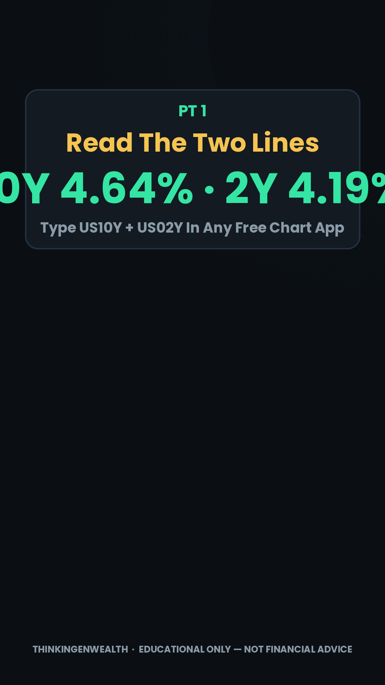
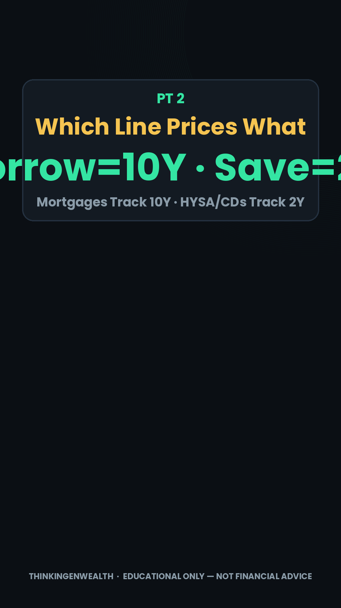
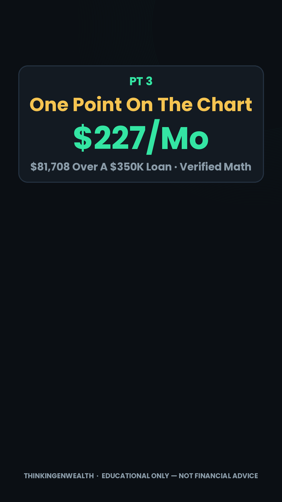
| Time | Beat | The line | Cut lands | Loop |
|---|---|---|---|---|
| 0:00 | Cold open | "31,300 people paid to learn money this weekend. Nobody read the one letter that decides it." | Invest Fest still → myth card | OPENS |
| 0:02 | Stakes | "Getting denied did NOT hurt your score — believing it does is why you're stuck." | Myth card (red X) | open |
| 0:08 | Pt 1 | bureaus record the inquiry, never the outcome — check your own report | P1 tile (0 pts) | loop 1 |
| 0:25 | Pt 2 + re-hook | the application costs ~5 pts → "the answer's already in your mailbox" | P2 tile (~5 pts) | loop 2 |
| 0:40 | Payoff | the adverse-action letter, decoded — read, fix, wait ~90 days, apply once | P3 tile | CLOSES |
| 0:58 | Loop-close | "the denial cost you 0 — the panic-applying costs you" | myth card re-cut | CLOSED |
| Platform | Asset | Angle / age cut | Window | CTA |
|---|---|---|---|---|
| Instagram ① | IG-native react reel FIRST — Invest Fest peg → myth card | 25–34 first credit card | ~3pm ET, same day — HARD GATE | Comment DENIED (line 1) · weekend DM GEN allowed |
| TikTok ② | Same react, TikTok cut | 25–34 + Search demand ("cant get a loan," balance transfers) | 12–7pm band, after IG is live | Comment DENIED |
| YouTube ③ | Short (≤45s) | 35–54: "the letter most adults never read" | After IG/TT | Artifact + soft CTA |
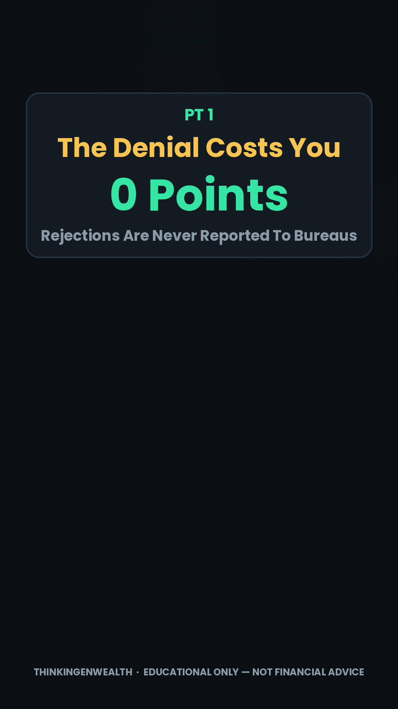
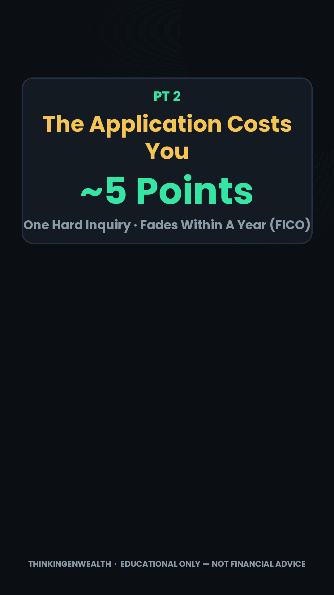
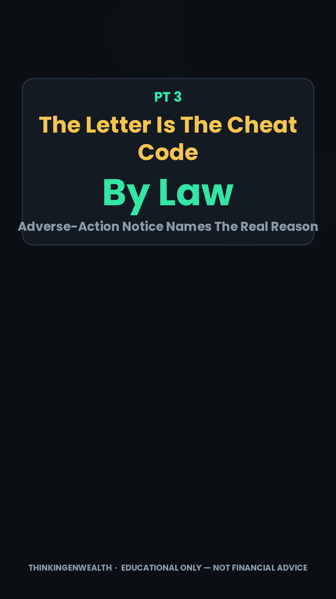
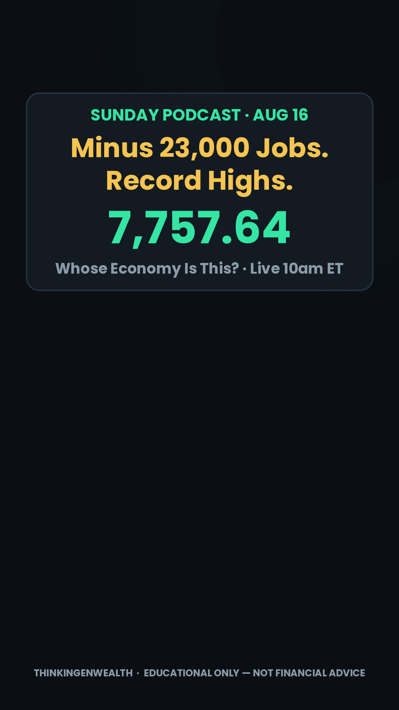
"Minus 23,000 Jobs. Record Highs. Whose Economy Is This?" · Through-line: "If the economy is losing jobs, why is your money at all-time highs — and which story decides YOUR next 12 months?" · ⚠ Built Mon Aug 10 — the Wed/Thu/Fri prints are FILL-LIVE blanks; fill Sunday AM before recording. Full copy also at scripts/podcast-rundown.md.
★ One Sunday post was ~92% of the YouTube week. "Why the Stock Market Is NOT the Economy (Half of America Owns 1%)" (Sun Aug 9) — 780 views · 41.1% avg viewed · 1:13 · 19 likes · 3 real comments · ranked 2 of 10, "more views and likes than usual." Everything else was ≤18. One idea, one number, concrete event — Formula v2 again, on the one post that shipped.
🔻 What didn't ship: the Tue mortgage/yield react, the Thu chart evergreen (the first skipped week in the log), and the Fri jobs-day react — which missed the −23,000 shock, the strongest concrete peg since the shutdown. Two posts ran all week: the Caleb Hammer repo-clock credit react and the Sunday post.
🔻 The IG-first gate broke in week one. The collab went TikTok Tue Aug 4 (324 views / 359 all-time), then IG Wed Aug 5 — 153 views · 121 reached · 63.2% non-followers · 5 likes · 0 comments · 0 saves · 1 share · 1 follow. Against 1,776 the week before. The format works; the same-day IG-native cut is still unrun after five of six weeks.
✅ Search is holding the floor at 71% — the highest share since mid-July, which is what happens when fresh posts under-ship. New named demand: "best balance transfer credit cards for 2026" · "go biz rewards navy federal business" (our first explicit BUSINESS-lane search) · "bearish vs bullish" · "how to after pay doordash". Evergreen still compounding: candlesticks 225 (97K all-time), best-cards-2026 230 (1.5K).
Atlas Berry (325K, +12K in a week) — 3 borrowings adopted this run: (1) caption line 1 = a one-sentence claim carrying a hard number, then short stacked fragments and → arrow bullets — the caption reads like a briefing; (2) a fixed community line repeated verbatim on every post (same repetition-equity as our sign-offs); (3) a plain-keyword block above the hashtag stack — with TikTok Search at 71% of our traffic this is the highest-leverage steal available. He also labels opinion explicitly ("here's my read") — clean packaging-vs-substance.
The lean-into call: run the sequel to the Sunday winner while the audience is warm — "half of America owns 1%" asked whose economy this is; the jobs print answers it on their paystub. Protect the trio, let Wednesday's CPI earn the 4th drop, and ship the Saturday collab IG-first, same day — that's the one rule that keeps failing.
Full bank with on-screen text + CTAs: TGW Evergreen Reel Bank.md (ships in this deploy).
Creators our TikTok viewers also watch: Samsung US · bigweirdworld · apple · Google Pixel · Ben · Earn Your Leisure (370K) · LAWYER Angela (1.8M) · Carterpcs. EYL appearing here is direct confirmation of the collab vein. LAWYER Angela's top post is a free downloadable PDF guide — the named-free-artifact pattern working at 1.8M scale.
Content gaps by demographic: 25–34 first-milestone money (denial letter ✓ this week, first paycheck #41 staged) · NEW: business credit — "go biz rewards navy federal business" is our first explicit business-lane search; queue an EIN/business-card piece (Lane 1 only, never touches investing) · balance-transfer cards (named demand) · YouTube 35–54 deep cuts (401k true-up, backdoor Roth, RSUs) · parents 30–44 + the rising female share (custodial/529, couples & money).
Lane 1 — the BUSINESS lane: fix the credit → cheaper borrowing + business funding when you need it. Lane 2 — the INVESTING lane: invest what you EARN through the brokerage — earned income only, never borrowed money, never margin. Connect the journey, keep the lanes explicit. Any copy that could read as "borrow → invest" fails review.